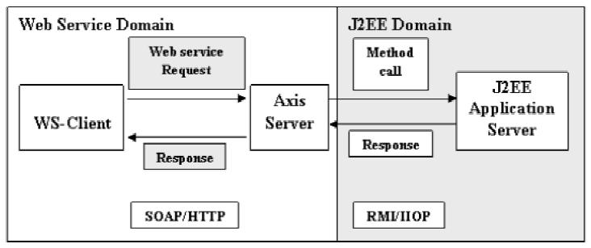
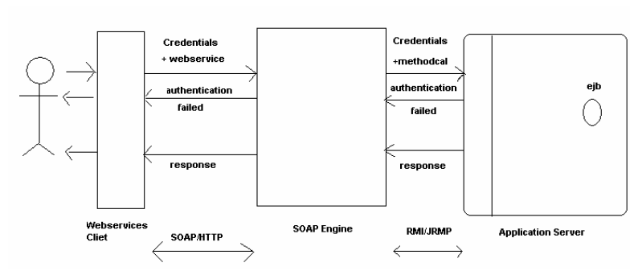
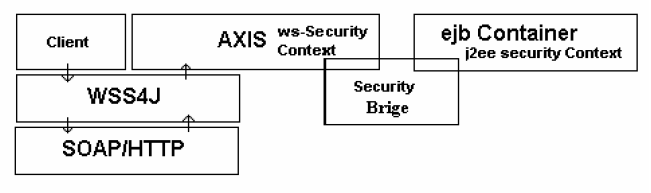
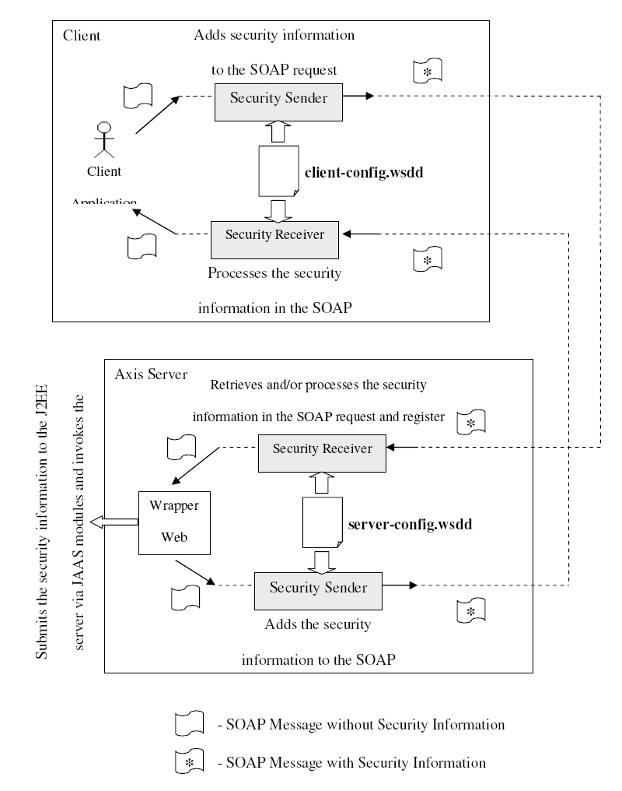
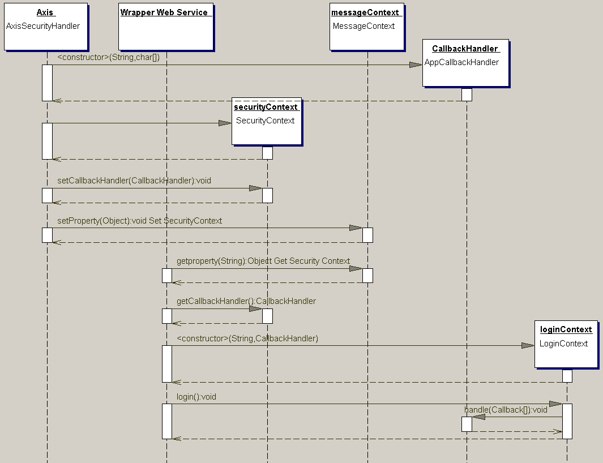

EWS Security
Introduction
The EWS security is a security framework that spread across the web services domain and J2EE domain, and facilitate a secure environment for the EWS user
Design Considerations
There were some design guide lines that shaped up the design and implementation of EWS security.
Loosely Coupled with the Service Implementation
The security providing classes should not be tightly coupled with the clients applications or with the service implementation classes at Axis or J2EE application server.
Therefore service deployers will be able to change their security policies without modifying any of their service implementation classes. They will only have to modify the configuration file at
the Axis server.In other words the set of security providing classes should be a pluggable module. Their functionality should be well defined so that users can write their own security providers use them
to provide security.
Adaptability to New Requirements and Technologies
Web Service security is still a growing area of technology. After the Web Service Security specification was published some other specifications related to WS-Security has been introduced.
(e.g. SAML) And also the Web Service for J2EE is a very new area. Therefore when it becomes more popular, there is a high probability for new requirements to emerge. Security requirement specification
may also be added with new requirements. Therefore the design and the implementation of Security providers should be able to adapt to the emerging technologies and new requirements.
Use Existing Technologies and the Programming Model
WSS4J is an implementation of WS-Security specification. In future, it is going to be used by almost all the Web Service deployers on java platform to secure their web services. Open source
community has put a significant effort on developing this utility project. Therefore reusing its components will make the implementation of Security for J2EE Web Services, easier and
compliant with latest versions of the specifications. WSS4J has introduced a programming model for implementing the WS-Security specification to provide security to the SOAP based web services. i.e., the security related information is added to
the SOAP messages by handlers and that security information available in the SOAP messages will be processed also by handlers at the other side. These handlers are configured by the
properties set at the deployment descriptors. Handlers at receiving sides, stores the results obtained by processing the Security headers, in a well defined data structure and register it with the SOAP MessageContext. Then any other
handler or ContextAccessible web service can access the results through the MessageContext.Therefore in the implementation of security mapping for Web Services for J2EE, a programming
model similar to that of WSS4J should be used in implementing the Web Service side of it. Then there wont be difficulties in reusing the WSS4J classes. Also the users and developers of the
J2EE Web Services, who are already familiar with the WSS4J model, will be able to easily work with this implementation.
Uses the Existing Configuration Files
The JSR 109 specification says that it should define the minimal set of new concepts, interfaces,
file formats, etc. necessary to support Web services within J2EE.
Therefore the configuration of security services should also be done in existing configuration files.
E.g.
Client Side : client-config.wsdd
Server Side : At deployment Webservices.xml
At run time server-config.wsdd
J2EE like Programming Model
Providing a J2EE like programming model for service developers is an underlying requirement of the implementation of JSR 109. When a user deploys an EJB or a Servlet in a J2EE container, user doesnt have to bother about writing the security implementations for the service. All the issues regarding providing the
security, are taken care by the J2EE container itself. User has just to specify the level and type of security he/she needs. But the user should be able to customize the security services. Similar to that model, when a user deploys a Web Service for J2EE, user should be released form
the issues regarding the implementation for providing security. User should be able to have the level and type of the security he/she needs, just by specifying those in the deployment descriptor.And these entries that should put in to the deployment descriptor should follow the existing formats if possible in order to avoid the complexity of the deployment.
Implementation Transparency to the Web Service Client
One of the important service deployment goals of JSR109 is, how the Web service has been
implemented should be transparent to the Web service client. A client should not have to know if
the Web service has been deployed in a J2EE or non-J2EE environment. In other word the
backend J2EE components behind the web services should be transparent to the web services
client.
When invoking an enterprise Web Service, an information exchange occurs. The path of this
information exchange is circular. Half of this path is in Web Service domain and the other half is
in the J2EE domain.

For the security implementation to be transparent, web service client
should see the enterprise web service as a web service implementation that require WS Security
authentication and credentials for authentication at some server, and the EJB container should see the enterprise web service call as if it is coming
from a EJB client who is willing to authenticate itself in the normal J2EE authentication manner.
Approach
EWS talks about two possible types of java artifacts implementing the webservic; POJO and the ejb. Since POJO has been already handled by the AXIS, major attention is given to the ejb. Obviously the ejb is deployed in a J2EE server and is secured under the security requirements defined in the the EJB and J2EE specification.
The WSS4J provides a set of security services for the SOAP based web services, which, are
defined in the WS-Security specification. This implementation can be used to meet the security
requirements at Web Service Domain when pursuing the enterprise web services security
requirements.
The J2EE component, in this case an enterprise java bean, will reside in the application server and it is exposed as a web service to the potential client. So the intuitive solution will be to get the credentials from the web service client and some how transport it securely on top of SOAP/HTTP and produce those credentials to the EJB container and authenticate the web service client to the EJB container. So when the web service client eventually invoke the web service, the enterprise web service runtime will invoke the relevant enterprise java bean method and by the time the web service client has already authenticated itself to the EJB container. So there will be no issue in authorization unless of
course the authentication fails or the authenticated principle doesnt posses sufficient clearance to
call the method.

Above diagram try to give an abstract picture of the solution and it has a nice architecture too. It
shows at the client end when the web service request is sent with credentials it will be converted
to a method call and a credential inside the SOAP engine and will try to do the EJB call. If
credentials are not accurate the authentication will fail and if credentials are accurate the method
call will happen and the response will be sent back to the client.
The Challenge
In the above diagram it shows that there is a necessity for secure communication between web
services client and the SOAP engine for the purpose of credential propagation. The
communication between web service client and SOAP engine is done using SOAP/HTTP. So it is appropriate to use a web services security implementation for this purpose.
The web services part
has the WS security model and the J2EE part has the J2EE security model. So the biggest
challenge would be to map the two security models in such a way that, in the context of security,
the EJB container should be transparent to the web services client and web services client should
be transparent to the EJB container. In other words, when it comes to security, web service client
should see the enterprise web service as a web service implementation that require WS Security
authentication, and the EJB container should see the enterprise web service call as if it is coming
from a EJB client who is willing to authenticate itself in the normal manner.

Keeping in mind that the enterprise web services comprise of two major subsections, the web
services subsection and the J2EE subsection; both these subsections have its own security
contexts independently. The web service part will have its WS-Security context that is being
maintained with the use of WSS4J, the Apache WS-Security implementation. On the other hand
the EJB container is responsible for enforcing access control on the enterprise bean method. It
consults the security policy (derived from the deployment descriptor) associated with the
enterprise bean to determine the security roles that are permitted access to the method. For each role, the EJB container uses the security context associated with the call to determine if it can
map the caller to the role.
So as the above diagram shows the requirement is a security bridge that can use the Security
context of one Security model and to do a lossless translation of it to the other Security model.
The JAAS (Java Authentication and Authorization Service) is capable of playing the role of the
security bridge, as required for this case.
Implementation
As described in the above sections information flows through two domains, when accessing J2EE Web Services.
Those two domains have there own security infrastructures. Therefore the implementation has to
do 3 man tasks.
- Provide Security at Web Service domain
- Provide Security at J2EE platform.
- Map the Security Services of one domain to the other.
In order to perform these tasks, the implementation has two separate modules namely,
- Axis side Security module
- J2EE side Security module
Axis side module provides the web service security and brings the clients security information to
a format that can be handed over to the J2EE side Security module.
Then the J2EE side Security module, uses the above mentioned security information to ensure the
security at J2EE container.
Axis side Security Module
This sub module performs the following tasks.
Provides Client side Security handlers for Java clients to add security to the SOAP
requests.
Provide Server side Security handlers to process the security information available in the
SOAP requests.
Provides Server side Security handlers to add security to the SOAP responses.
Provides Client side Security handlers for java clients to process the security information
in the SOAP responses.
Retrieves the security information required at J2EE domain, from the SOAP Security
headers and HTTP headers.
Publishes the retrieved information in an object called SecurityContext4J2EE, in a
way that JAAS modules can easily retrieve that information and ensure the security at
J2EE.
Defines the entry formats of the configuration files and customizes the general handlers
at both client side and server side, according to the configurations.

Security Senders
Same set of Security handlers to add security information to the SOAP messages, can be used at
both Client side and the Server side. At client side they are configured by the client-config.wsdd
configuration file. At Axis server side they are configured by the server-config.wsdd
configuration file. When these security senders are used at client side the clients may not know
that the implementation of the web service they are invoking, is at a J2EE container. Clients can
use their own handlers to add the required security information to the SOAP requests instead of
using the following. As long as they are compliant with the BASIC-HTTP authentication and
WS-Security standards, these SOAP requests can be processed accurately by the server side
security handlers.
Axis side Security module provides following handlers to add security to the SOAP messages.
BasicAuth4J2EESender
As the name implies BasicAuth4J2EE provides only the authentication services.
This handler adds the credentials of the sender (Username Password pair) to the HTTP(S) header.
The credentials to be added are fetched from the sender using an instance of the
javax.security.auth.Callback object set by the configuration file.
Since the credentials are in the HTTP header as a Base 64 encoded string, this type of
authentication service should be used only when the transport level security is available (i.e.
HTTPS/SSL).
SimpleWSS4J2EESender
SimpleWSS4J2EESender also provides only the authentication service. But it follows the WSSecurity
specification. This handler adds a Security header with a UsernameToken element to the
SOAP header. It can have either the username and password text or username and password
digest along with the nonce and created values.To fetch the senders credentials to be added to the SOAP header, this also uses an instance of the
javax.security.auth.Callback object set by the configuration file.
If the sender uses PasswordText format to send the password, transport level security should be
available. The SOAP security header added by this handler can be processed by any handler
compliant to the WS-Security specification.
WSDoAllSender
This is a WSS4J handler without any kind of modification. This can be used to add all the
security services supported by the WS-Security specification. This handler is customized by the
entries of the configuration file.
Security Receivers
There are two sets of Security Receivers. One set is to be used at Axis server side and the other
set is to be used at the client side.
Axis server side handlers are configured by the server-config.wsdd configuration file.
Client side handlers are configured by the client-config.wsdd configuration file.
If the security processing at any of these handlers fails, it breaks the execution flow and throws
and exception.
Axis side Security module provides the following handlers to process and retrieve the security
information at the Axis server.
BasicAuth4J2EEReceiver
This is the server side counter part of BasicAuth4J2EESender handler. Service deployer can set a
flag at the configuration file to specify whether the authentication is done at both the Axis and
J2EE application server or only at J2EE application server.
According to the above flag this processes the HTTP header and retrieves the credentials sent by
the client. Then a javax.security.auth.Callback object which encapsulates the above
credentials, is created. Then it is stored in the SecurityContext4J2EE object at the Axis
MessageContext.
If this security service is used the transport level security should be available (HTTPS/SSL).
SimpleWSS4J2EEReceiver
This is the server side counter part of SimpleWSS4J2EESender handler. Service deployer can
set a flag at the configuration file to specify whether the authentication is done at both the Axis
and J2EE application server or only at J2EE application server.
According to the above flag this processes the SOAP security header and retrieves the credentials
sent by the client. Then a javax.security.auth.Callback object which encapsulates the
above credentials, is created. Then it is stored in the SecurityContext4J2EE object at the
Axis MessageContext.
If this security service is used with the PasswordText mode instead of the PasswordDigest mode,
the transport level security should be available (HTTPS/SSL).
AllSecurity4J2EEReciever
This is the server side counter part of the WSDoAllSender handler. Same as before the service
deployer can set a flag at the configuration file to specify whether the authentication is done at
both the Axis and J2EE application server or only at J2EE application server.
This processes the all types of security tokens defined by the WS-Security specification. The
security tokens are processed by the following order.
- Signature Verification
- Decryption
- UsernameToken Processing
Signature Verification and the Decryption are done similar to WSS4J. Since the Encryption and
Signing the Message content is a part of the Web Service domain, those operations are done at
Axis. The information required to do those operations should be available to Axis via property
files. These property files are set at the deployment descriptors. But the authentication can be
done at any of the two domains or at both domains.
When processing the UsernameToken element, according to the above mentioned
AuhenticationAtAxis flag, this processes the SOAP security header and retrieves the credentials
sent by the client. Then a javax.security.auth.Callback object which encapsulates the
above credentials, is created. Then it is stored in the SecurityContext4J2EE object at the
Axis MessageContext.
As the client side security receivers, clients can use WSS4J handlers. Since Basic Authentication
and WSSUsernameToken type security is not going to be used at the response flow, there is no
need for a client side counter part for the appropriate senders. At the response flow, in order to
handle decryption and the signature verification at client side, WSDoAllReciever can be used as
it is. Configuration of this handler can be done via client-config.wsdd itself. Relevant information
needed to the processing the headers should be provided via property files.
J2EE side Security module
The J2EE side security module is basically concerned in implementing the Security Bridge implementation that will bridge the WSS Security Context to the J2EE Security Context.
The Axis side security module will deliver the web service client credentials to the Axis SOAP
Engine. Once the Credentials reach the Axis SOAP Engine the WS-Security context will be
available to the application encapsulated in the
org.apache.ews.context.security.SecurityContext4J2EE object. Then it is
necessary to use the security domain bridge (JAAS) to do the eventual bridging of the WSSecurity
context to J2EE Security context.

As the sequence diagram illustrate the J2EE side of the enterprise web services security
implementation start at the Axis Soap Engine, due to the simple reason that the Axis SOAP
engine is the J2EE client for the application server. The Axis side security module is responsible
for populating the SecurityContext4J2EE (WS Security Context explained above) with the
credentials, etc and registering it with the MessageContext of the web service. This occurs in
the Axis Security Handler.
The actual bridging of the security context occurs in the wrapper web service inside the Axis
Soap Engine. The wrapper web service will get the CallbackHandler from the SecurityContext and will instantiate the
javax.security.auth.login.LoginContext as a preparation for JAAS
authentication.
LoginContext lc = new LoginContext("SomeLoginModule", handler);
Then the wrapper web service will simply call the login() method of the LoginContext. At
this point the JAAS module will call the callback handlers
handle(Callback[] callbacks)
method and get the credentials. Now the application can call any EJB method that would require
authentication. At the time of the method call the JAAS will propagate the Subject (the public
credential and the private credential) of the user to the EJB container for authentication at the EJB
container itself.
The solution described above is a standard code library independent of the application server. The
reason behind such declaration is that the code base does not posses any server specific modules.
The discussed implementation so far is concerned with the enterprise web services runtime and
client side and server side WS-Security related modules. But there are other requirements that
should be met at the application server side at the deployment time. These requirements include
setting up security domains and defining JAAS login modules for the selected security domains.
Such a JAAS Security Manager implementation is container specific. This Code library has been tested on the JBoss Application server and this document will be updated as and when it is tested on Geronimo.